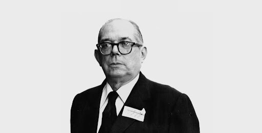

Marco teórico
Partiremos de la idea de Josep Fontana, quien nos indica que para comprender el comportamiento de los hombres no basta con ocuparse del trabajo y la subsistencia. Es necesario además, entender la manera en como interiorizan y expresan su experiencia cotidiana. Ninguno de estos abordajes por separado nos muestra más que “fantasmas sin relación alguna con el mundo real” (1989, p. IX). En base a ello, optaremos por un enfoque dialectico marxista, a través del cual las relaciones sociales de producción inci-den en la propia acción de las personas particulares que interactúan dentro de ellas. A su vez, las contradicciones dentro de estas relaciones sociales son las que motorizan el cambio en la forma de pensar y actuar en los sujetos (Marx, 2018). Prosiguiendo con las observaciones de Thompson al analizar los orígenes de la clase obrera en Inglaterra, “La conciencia de clase es la forma en que se expresan estas experiencias [de clase] en términos culturales: encarnadas en tradiciones, sistema de valores, ideas y formas institucionales.
Si bien la experiencia aparece como algo determinado, la conciencia de clase no lo está” (1989, p. XIII-XIV). En este sentido, analizaremos la forma de reaccionar a las desigualdades y las injusticias propias del modo de producción capitalista en formación. Pero también, nos será de utilidad para comprender la experiencia de los trabajadores dentro del complejo azucarero como los cambios y continuidades respecto de otras formas de producir que el capitalismo adopta y pone a su servicio obteniendo un grado de explotación mayor. Para lo anterior, nos serviremos del diálogo que propone Michel De Certeau con el concepto de dispositivos de control de Foucault. Si para Foucault los “dispositivos” son procedimientos técnicos “minúsculos” que organizan el espacio para convertirlo en operador de una vigilancia generalizada. Entonces, para De Certeau resulta importante de señalar “qué procedimientos populares (también “minúsculos” y cotidianos) juegan con los mecanismos de la disciplina y sólo se conforman para cambiarlos” (2000, p. XLIV). He aquí el concepto de resistencia y de organización de un proletariado que se va tornando consciente Desde esa toma de conciencia, a través de un proceso de larga duración, el proletariado se organizará por el reclamo de demandas específicas de sa-tisfacción de sus necesidades.